パワーステアリング リンクASSY 分解 |
| 1. ステアリングライトターンプレッシャチューブ取りはずし |
| 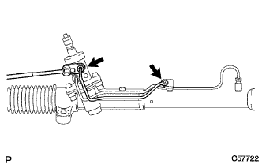 |
ユニオンナットレンチ12を使用して、ライトターンプレツシヤチユーブを取りはずす。
| 2. ステアリングレフトターンプレッシャチューブ取りはずし |
| 3. パワーステアリング リンクASSY固定 |
| 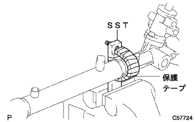 |
保護テープを巻いたSSTを使用して、ステアリングリンクASSYをバイスに固定する。
| 4. タイロッド エンドSUB-ASSY LH取りはずし |
| 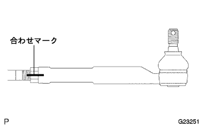 |
ラツクエンドとタイロツドエンドLHに合わせマークを付ける。
ロックナットをゆるめ、タイロツドエンドLHおよびロックナットを取りはずす。
| 5. タイロッド エンドSUB-ASSY RH取りはずし |
| 6. ステアリングラックブーツ クリップ取りはずし |
プライヤーを使用して、左右のクリップを取りはずす。
| 7. ステアリングラックブーツ クランプ NO.2取りはずし |
| 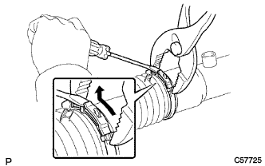 |
プライヤーを使用して、ブーツクランプNo.2を押し縮める。
マイナスドライバーを使用して、図のように起こしながらブーツクランプNo.2を取りはずす。
| 8. ステアリングラックブーツ クランプ NO.1取りはずし |
| 9. ステアリングラック ブーツ NO.2取りはずし |
| 10. ステアリングラック ブーツ NO.1取りはずし |
| 11. ステアリング ラック エンド取りはずし |
| 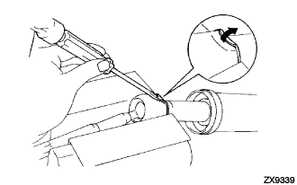 |
アルミ板を介して、ラツクエンドのボールジョイント部をバイスに固定する。
角軸マイナスドライバーおよびハンマーを使用して、左右のクローワッシャーのかしめを解く。
| 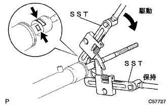 |
SST2個を使用して、左右のラツクエンドおよびクローワッシャーを取りはずす。
| 12. ステアリングラックガイド取りはずし |
| 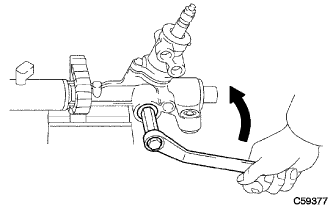 |
ストレートヘキサゴンレンチ21を使用して、スプリングキヤツプを取りはずす。
ラツクガイドスプリングをラツクハウジングから取りはずす。
ラツクガイドを取りはずす。
| 13. パワーステアリングコントロールバルブ取りはずし |
| 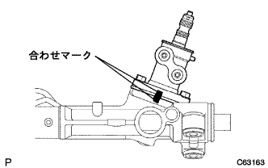 |
ラッツクハウジングおよびコントロールバルブハウジングに合わせマークを付ける。
ボルト2本をはずし、コントロールバルブASSYをラックハウジングから取りはずす。
ガスケットをラックハウジングから取りはずす。
| 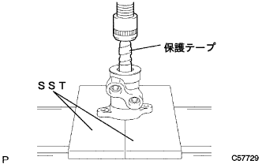 |
コントロールバルブのセレーション部に保護テープを巻く。
SSTおよびプレスを使用して、コントロールバルブを取りはずす。
| 14. パワーステアリングコントロールバルブリング取りはずし |
マイナス薄刃ドライバーを使用して、コントロールバルブリング４個を取りはずす。
| 15. パワーステアリングコントロールバルブアッパベアリング取りはずし |
| 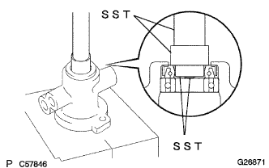 |
SSTおよびプレスを使用して、コントロールバルブアツパオイルシールおよびコントロールバルブアツパベアリングを取りはずす。
| 16. パワーステアリングコントロールバルブスペーサ取りはずし |
| 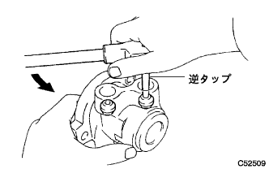 |
逆タップを使用して、コントロールバルブスペーサ２個を取りはずす。
| 17. シリンダエンドストッパホールスナップリング取りはずし |
| 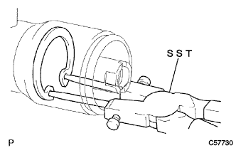 |
SSTを使用して、ホールスナップリングを取りはずす。
| 18. パワーステアリングラック取りはずし |
| 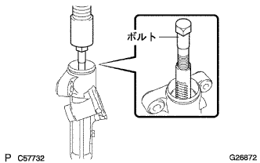 |
ボルトおよびプレスを使用して、ステアリングラックを取りはずす。
| 19. シリンダエンドストッパ取りはずし |
シリンダエンドストツパをステアリングラックから取りはずす。
シリンダチユーブオイルシールをステアリングラツクから取りはずす。
| 20. ラックステアリングピストンリング取りはずし |
マイナス薄刃ドライバーを使用して、ピストンリングおよびOリングをステアリングラツクから取りはずす。
| 21. パワーステアリングラックハウジングオイルシール取りはずし |
| 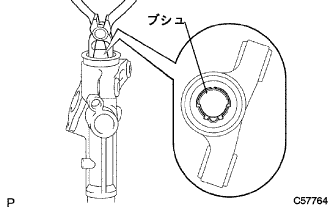 |
ニードルノーズプライヤーを使用して、ラックブシュを取りはずす。
| 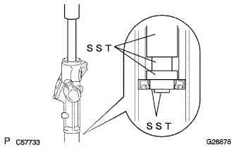 |
SSTおよびプレスを使用して、ラツクハウジングオイルシールを取りはずす。